Intro
Hi guys, how are you guys doing ?
Recently a bunch of college friends asked me about my experiences with Zig, and i’ll be honest, it’s been great. I like using allocators, comptime and many other features. I also love Nix.
So one of them asked me if i could demonstrate him by building an application with it. I was like yea sure, i’ll write up a doc and share it with ya.
But the process of adding images and stuff and sharing with many people (if anyone else asks) is hard. So i decided to write a small blog post on it. Makes more sense to someone
Topic
As we know, a new init of a software system is usually paired up with a good cli. A good cli system with subcommands and flags helps a lot.
In a good backend system things like schedulers, workers, different process can be triggered via subcommands and multiple flag options helps a lot.
Hence today we are gonna build a new project in zig, add a cli dependency and build and run it. Hope it does makes sense 😭
Let’s work on
Installing Nix
I am a huge Nix fan and use nix-darwin as my daily driver, i would be using nix-shell to manage all.
Also to be presice, i dont want to use flakes rn so that i dont have to turn on the experimental feature and making you the user to fuckup the process of learning. I want you to enjoy. So i’ll be avoiding flaks rn.
For new users to Nix, i will suggest you to go to this link Install Nix to install nix on your operating system. You’ll see something like this 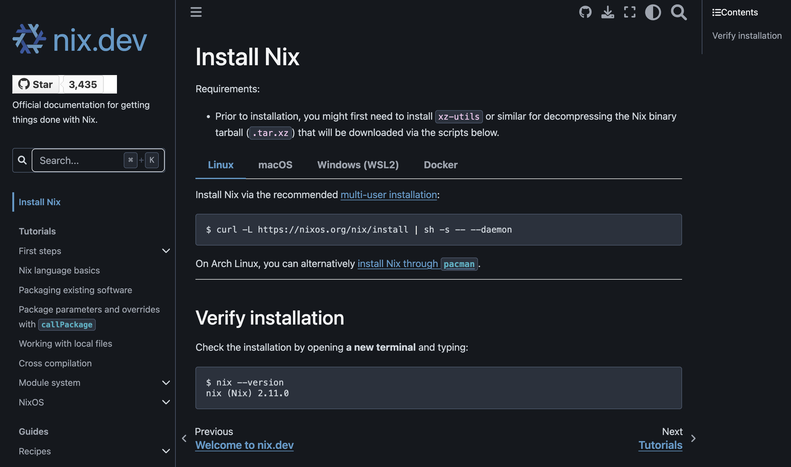 Please install according to your system requirements.
After installation, lets learn a bit about nix-shell. Click on this. You’ll see something like this 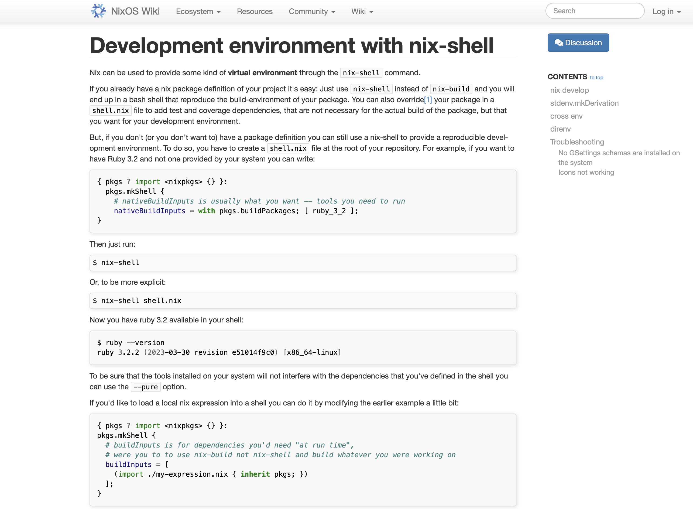 Go on, read about it. Knowledge is necessary.
Setting up Nix-Shell, installing Zig and Zig language server
So now you should be able to spin up nix-shell’s properly and manage. One thing to try to test this out is this 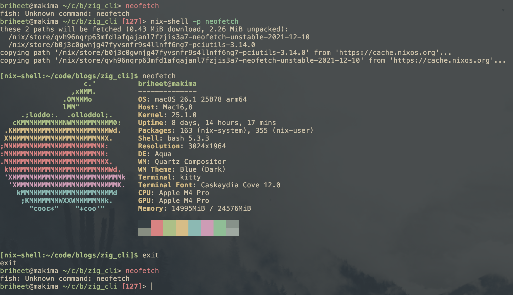
Cool then. Let’s start writing a shell.nix file for spinnig up the shell. So we dont want to install our dependencies system wide hence we would declare them in shell.nix file, spin it up and therefore use it.
Make a new file named shell.nix in the project root. Add this piece of code there.
{ pkgs ? import <nixpkgs> {} }:
pkgs.mkShell {
buildInputs = with pkgs; [
pkgs.zig_0_15
pkgs.zls
];
shellHook = ''
alias ls='ls -al'
'';
}
It would look like this, 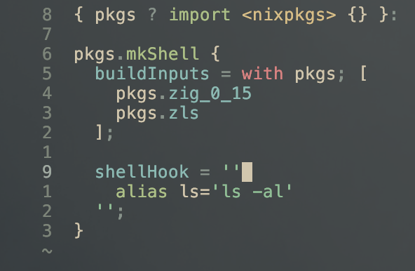
Note: this uses Zig 0.15.x via pkgs.zig_0_15. If your nixpkgs channel doesn’t have it (some stable channels), either pin a nixpkgs revision that does or pull from an unstable channel before running nix-shell.
Cool, now run nix-shell in root of your project and it should give you a shell with zig and zls installed. 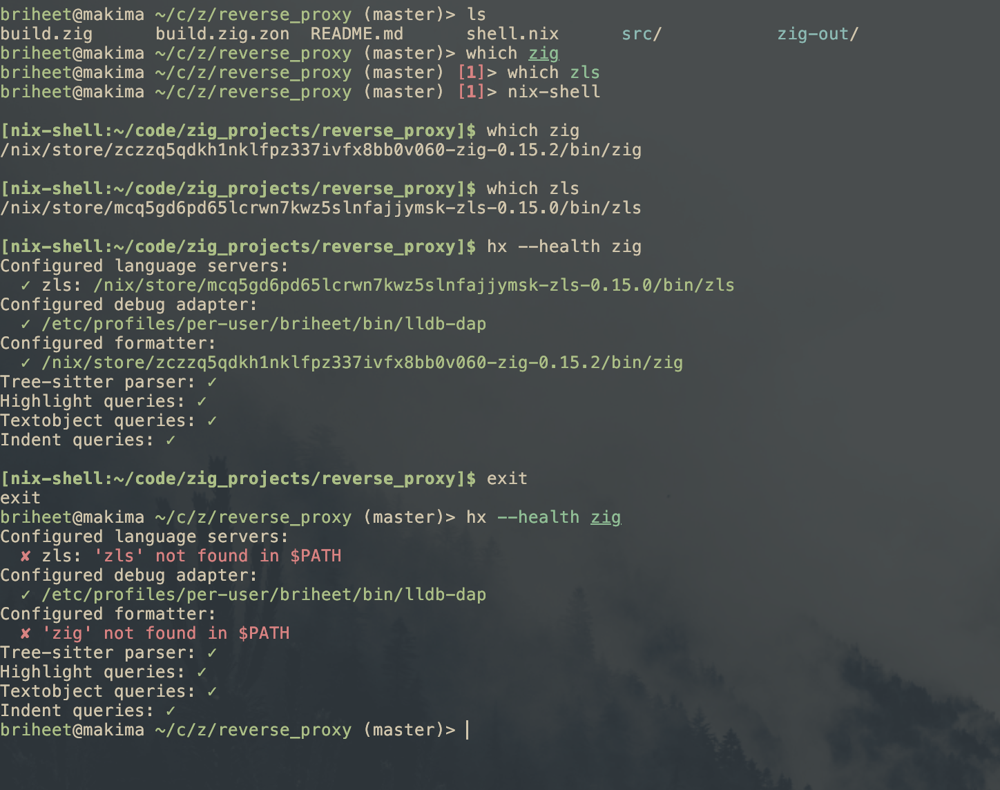
The nix-shell here quietly picked up the shell.nix file and did his job. Either you specify the file name like “nix-shell someShellfile.nix” or just do “nix-shell” and let it pick up. Also remember, Just doing “nix-shell” will only pickup files named shell.nix and default.nix
Don’t get confused by my text editor, i use Helix. Now you have everything setup, lets move ahead.
Init a new zig project, run “Hello, world!”
Now we will init a minimal zig project, write a hello world code and run it. Here is the way for it with code 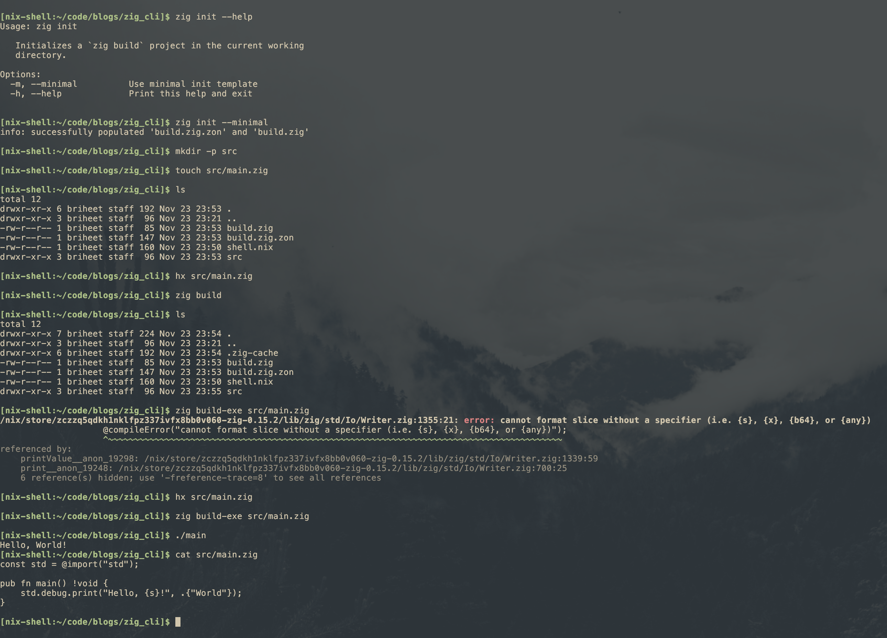
Click the highlighted text to learn more about Zig
Setup Zig’s build system
This is fairly easy part. You need to add it as executable in build.zig file like this. 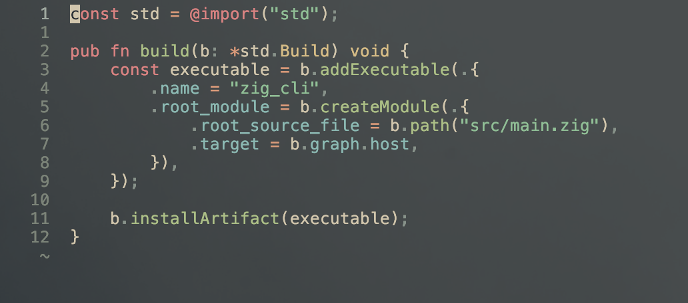
Now as exe is added, you can build and run the binary like this. 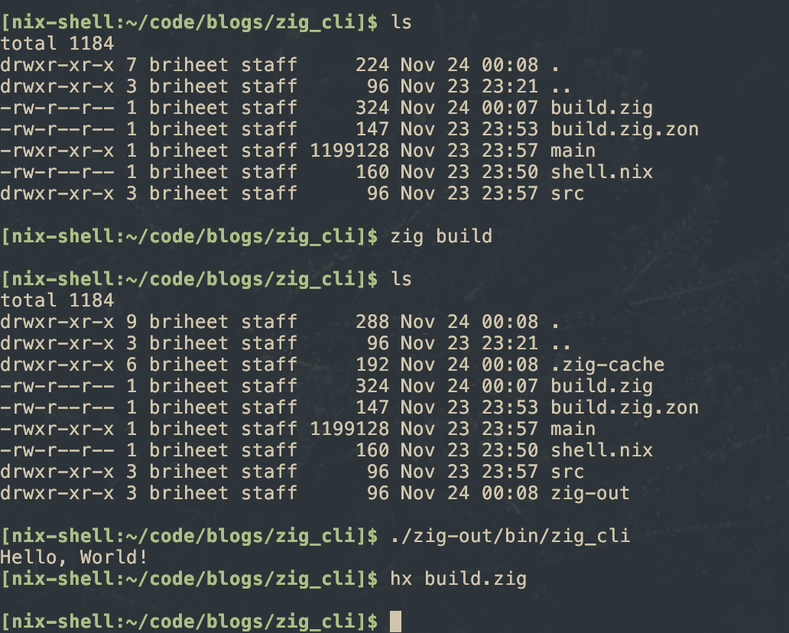
Cool, now lets work on adding the CLI module.
Adding CLI module
We are going to use this module Zig’s Cli Module. Pretty nice, works fine.
At first, we will fetch the cli in our root module that is this.
zig fetch --save git+https://github.com/sam701/zig-cli#zig-0.15
Now check your build.zig.zon, you’ll see something. Search about the file name and its role.
Now we add it in our build system. Like this, 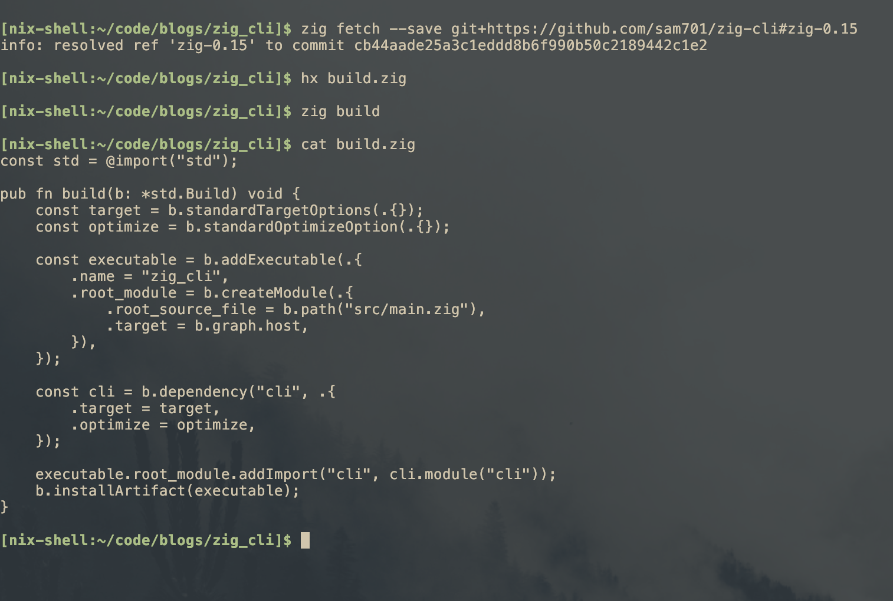
Here is the code for build.zig.
const std = @import("std");
pub fn build(b: *std.Build) void {
const target = b.standardTargetOptions(.{});
const optimize = b.standardOptimizeOption(.{});
const executable = b.addExecutable(.{
.name = "zig_cli",
.root_module = b.createModule(.{
.root_source_file = b.path("src/main.zig"),
.target = b.graph.host,
}),
});
const cli = b.dependency("cli", .{
.target = target,
.optimize = optimize,
});
executable.root_module.addImport("cli", cli.module("cli"));
b.installArtifact(executable);
}
Cool, now CLI module is added, lets move on to write a minimal cli setup and execute it.
Minimal CLI setup and execution
Here is a minimal CLI code setup. For simplicity i have just kept it as root commands and no subCommands or flags or anything. For more info on how to, please refer these examples.
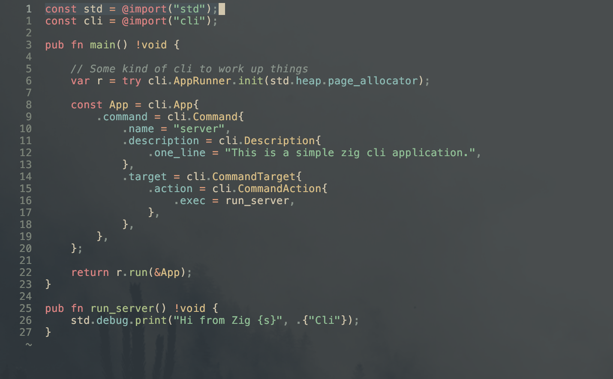
Here is the code for src/main.zig.
const std = @import("std");
const cli = @import("cli");
pub fn main() !void {
// Some kind of cli to work up things
var r = try cli.AppRunner.init(std.heap.page_allocator);
const App = cli.App{
.command = cli.Command{
.name = "server",
.description = cli.Description{
.one_line = "This is a simple zig cli application.",
},
.target = cli.CommandTarget{
.action = cli.CommandAction{
.exec = run_server,
},
},
},
};
return r.run(&App);
}
pub fn run_server() !void {
std.debug.print("Hi from Zig {s}", .{"Cli"});
}
Here is how you execute it. 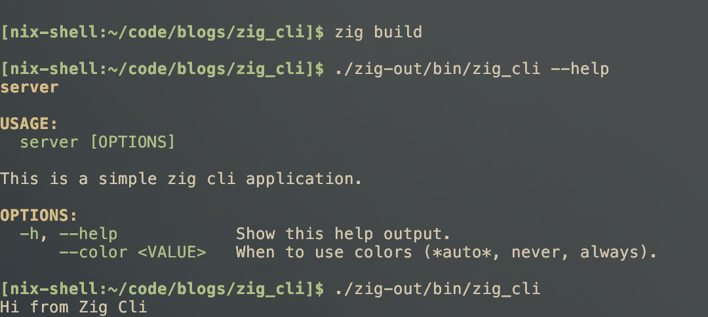
So yeah, that was the most part. This is how you minimally build projects in zig, add dependencies, etc.
Ending
This was one of the ways to do build and execute stuff. Pretty interseting tbh. Also, this was very surface level way to do it. My main goal here was introduction, and trying to spark interest among others.
Besides this, there are many ways, compiler optimisations, and multiple things to do but i tried keeping it simple and sane so any person can start with it or feed it into LLM to understand it.
Zig is this language which is really fasinating. I used to write Rust previously and C++ professionally aswell but i never got this level of joy in writing code. Only with GO, never with other languages. Also please sometime use Go to definition in your zig codebase and see how easy and simple things are written in codebase. Pretty wild that things can be so simple and understandable.
Also my love for NIX is ever-growing. I recently switched to Home manager and life is nice. Here are my dotfiles. Also don’t forget to collect garbage 😭 (nix-collect-garbage -d).
>> Home